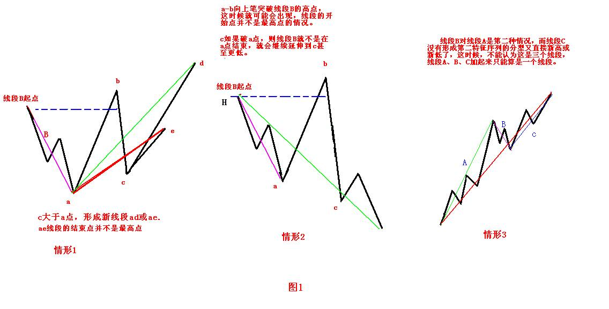
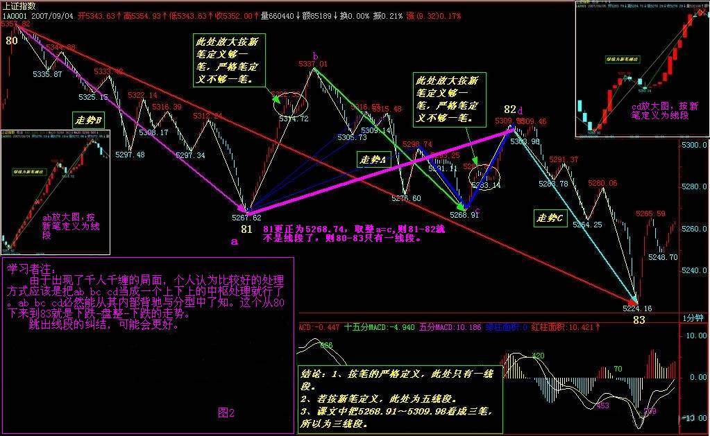
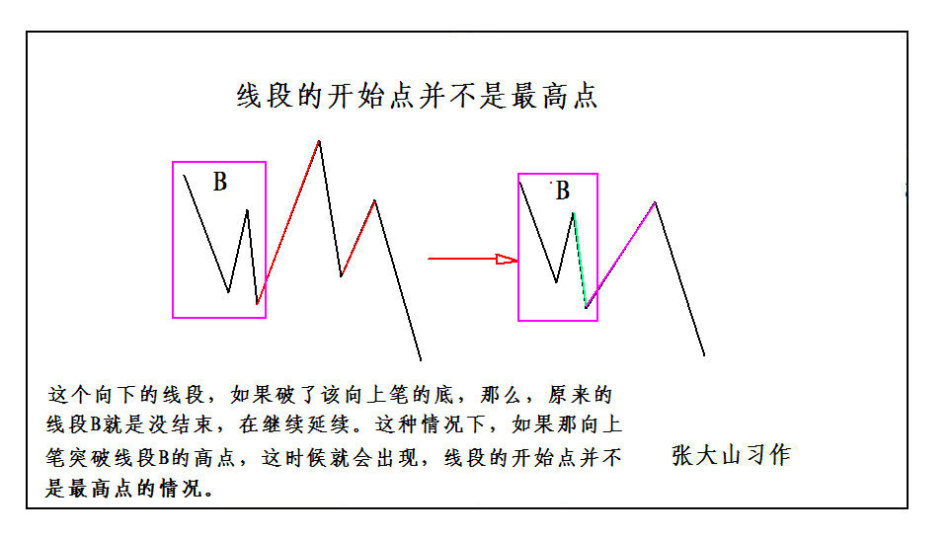
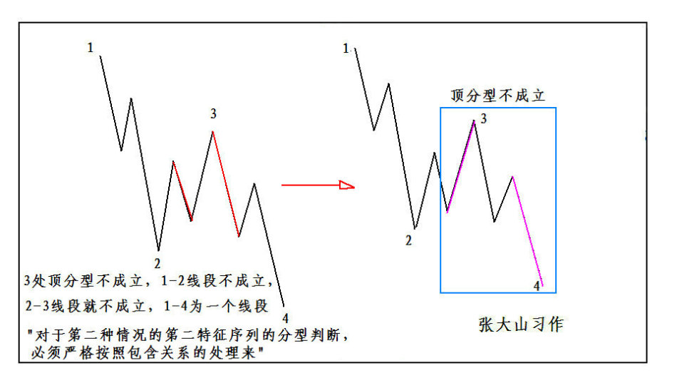
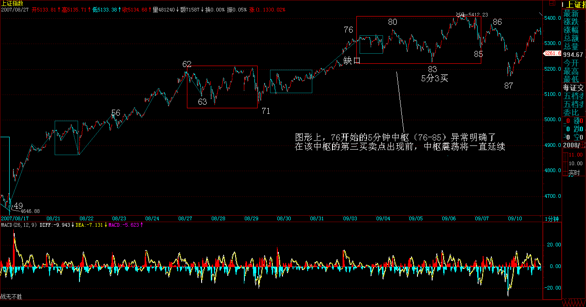
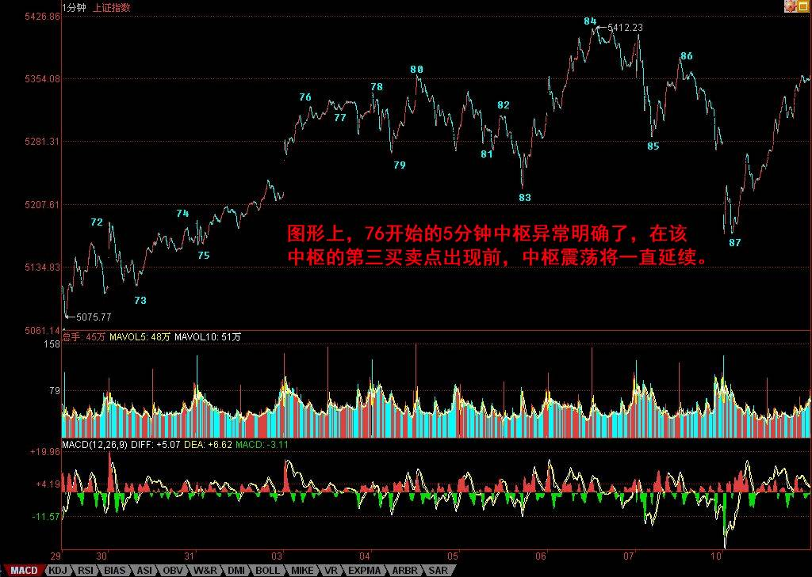
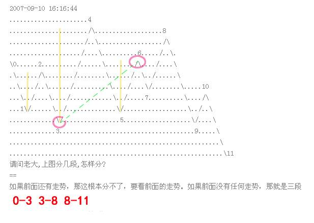

教你炒股票78：继续说线段的划分
(2007-09-06 22:28:31)
本来说好要开新课，但看到很多人确实还是没搞清楚，而且，今天本来也不是说股票的，等于占用了别的时间来补这一课。
线段的划分，就是上面课程里的两种情况，根据这两种情况的完全分类来，没有不能唯一去划分的。但一到实际划分，很多人就晕，为什么？因为基本的概念还是没搞清楚。
首先，线段和笔，都是有方向的，从顶开始的笔一定结束在底，同样，以向上笔开始的线段一定结束于向上笔，不可能一个线段，开始是向上笔，结束于一个向下笔。由于向上的笔的开始分型是底，而向下笔的结束分型也是底，换言之，一个线段，不可能是从底到底或从顶到顶，这是一个最基本的概念。
同样，正如同一笔不可能出现顶低于底的情况，同一线段中，两端的一顶一底，顶肯定要高于底，如果你划出一个不符合这基本要求的线段，那肯定是划错了。
由于图形不断延续，因此，除非是新股上市后最开始的一段，否则任何一段都是破坏前一段的，如果你的划分，不能保证前面每一段都是被后一段破坏，那么这划分肯定不对。线段的破坏是可以逆时间传递的，也就是说被后线段破坏的线段，一定破坏前线段，如果违反这个原则，那线段的划分一定有问题。
当然，实际划分中没必要都从上市第一天开始，一般都是从图K线中近期的最高或最低点开始，例如，如果你今天才开始进行划分1分钟图，那么，就可以从昨天下午跳水的最低点5224点开始，但这样，肯定对大的走势不可能有正确认识，要对这波行情有明确的分析，即使不从7月6日的3563点开始，也要从8月17日的4646点开始。
选择好了开始点，就可以进行分段了。如果熟练了，就可以直接分段，因为分型、笔都可以心算就知道，直接就可以进行分段；但如果不熟练，还是先从分型开始，然后笔，再线段，这样比较稳妥。
在实际划分中，会碰到一些古怪的线段。其实，所谓的古怪，是一点都不古怪，只是一般人心里有一个印象，觉得线段都是一波比一波高或低，很简单那种，其实，线段完全不必要这样。一般来说，在类似单边的走势中，线段都很简单，不会有太复杂的情况，而在震荡中，线段出现所谓古怪的可能性就大增了。
所有古怪的线段，都是因为线段出现第一种情况的笔破坏后最终没有在该方向由该笔发展形成线段破坏所造成的，这是线段古怪的唯一原因。因为，如果线段能在该方向出现被线段破坏，那就很正常了，没什么古怪的。

注意，这里有一个细节必须注意，线段最终肯定都会被线段破坏，但线段出现笔破坏后最终并不一定在该方向由该笔发展形成线段破坏。
由最简单概念知道，任何线段都有方向的，例如线段B，其方向是下，也就是由向下笔开始的线段，那么其结束笔肯定也是向下笔。因此，线段出现第一种情况的笔破坏，这破坏的一笔肯定是向上笔，但这一笔之后，没有形成特征序列的分型，满足不了第一种线段破坏的情况，因此，就在这个方向上形成不了线段的破坏。
而线段，不可能被同方向的线段破坏，任何同方向的线段，或者互相毫无关系，或者就是其中一线段其实是前一线段的延续，也就是说前一线段其实根本没完成。
但线段出现第一种情况的笔破坏后最终没有在该方向由该笔发展形成线段破坏时，在上面例子中的向上破坏笔完成后，接下来肯定是向下的笔，这笔肯定会形成一个向下的线段，否则，就意味着前面那向上破坏笔能延续出线段，这和假设矛盾。
这个向下的线段，如果破了该向上笔的底，那么，原来的线段B就是没结束，在继续延续。这种情况下，如果那向上笔突破线段B的高点，这时候就会出现，线段的开始点并不是最高点的情况。（注意，和这个情况一样，昨天的贴图里，81那点应该在09051101的5268.74位置上，而82的位置不变，因为原来标记的位置是一个急跌，当时的数据收集可能有点乱，用数据修正功能后发现实际上比09051101时高，因此必须有此修正。）
娇注：本例图走势没有比09051101时高，按照理论维持原来定位。为解释缠文，特配图
这个向下的线段，如果没破该向上笔的底，那么就可以肯定，由这向上的笔可以延伸出一个线段来，这时候，线段B肯定被破坏了。
注意，这个例子中有一个最关键的前提，就是线段B已经确认线段破坏了他前面的线段，如果线段B对前面线段的破坏都没确认，那就先确认，这里的分析都不适用了。
从这个例子就知道，笔破坏与线段破坏的异同。对于线段破坏的第二种情况，例如线段B对线段A是第二种情况，而线段C没有形成第二特征序列的分型又直接新高或新低了，这时候，不能认为这是三个线段，线段A、B、C加起来只能算是一个线段。
另外，一定要注意，对于第二种情况的第二特征序列的分型判断，必须严格按照包含关系的处理来，这里不存在第一种情况中的假设分界点两边不能进行包含关系处理的要求。为什么？因为在第一种情况中，如果分界点两边出现特征序列的包含关系，那证明对原线段转折的力度特别大，那当然不能用包含关系破坏这种力度的呈现。而在第二种情况的第二特征序列中，其方向是和原线段一致，包含关系的出现，就意味着原线段的能量充足，而第二种情况，本来就意味着对原线段转折的能量不足，这样一来，当然就必须按照包含关系来。
通过上面的讲解，应该没有任何线段问题能难倒各位了，当然前提是能把上面的内容搞明白。
注意，这里必须提醒一句，就是这在以前也曾说过，就是，如果线段中，最高或最低点不是线段的端点，那么，在任何以线段为基础的分析中，例如把线段为基础构成最小级别的中枢等，都可以把该线段标准化为最高低点都在端点。因为，在以线段为基础的分析中，都把线段当成一个没有内部结构的基本部件，所以，只需要关心这线段的实际区间就可以，这样就可以只看其高低点。
经过标准化处理后，所有向上线段都是以最低点开始最高点结束，向下线段都是以最高点开始最低点结束，这样，所以线段的连接，就形成一条延续不断、首尾相连的折线，这样，复杂的图形，就会十分地标准化，也为后面的中枢、走势类型等分析提供了最标准且基础的部件。

=======================================================================================
1、课文学习用图：


值得鼓掌的下跌
(2007-09-07 15:29:09)
今天的准备金本不是大事，但尚老先生的风险提示，可不能说是小事。最近天天报上风险提示，但尚老先生，是力主市场调节的，如果没这老先生，530大概早已不再被提起，因为已经有了更新的被各位口水一番了。
因此，做人要厚道，有人担着，就不能太给脸不是脸的，否则，好人难做，市场调节失效，那就政策调节吧，但对于一些不厚道的垃圾来说，到时候一样会喷粪的。
市场主动调节，那调整就是有限的，是系统可控制的。而市场不主动调节，要人工降雨，那要发生什么，就只有天知道了。
有时候，市场配合一下，那么力主市场调节的分力就更能发挥作用，这点如此显然，但在利益面前，很多人就昏头了，所以，有些事情是人算不如天算，不如不算。
技术上，这里出现一个大一点级别的震荡，那就按中枢震荡来处理，而不会看的，中线可以关注5周均线，从3600点上来，该线从来没有被触及，这是本段行情是否结束进入较大调整的一个最简单的PH试纸。
个股方面，像000938之类站稳530高位后继续走强的技术形态，会在其他股票上复制，对该股的态度，本ID已经说过多次，唯一需要补充的是，在一个清华比北大牛太多的年代，本ID也只能很经济学地去哈清华了，连清华都不哈，真不想在中国混了？
本ID说过的股票，还是要负责到底。600375，在7元时说过，本ID也是那时候进去的，当时的理由已经告诉各位，就是他有新产品，比三一的成本低多了，这是本ID派人实地考察过的，派出的人回来报告说，他连刚进口回来的钢板都亲手摸过了。但这公司，本ID对他信心不大足，就是其关联交易问题。而且很重要的，其一个超大关联公司，由于更多私人利益在里面，实际上接了600375发展起来的，可能最后要有大古怪，那新的玩意，要直接自己上市去实现私人利益的放大。这东西如果按正常直接装到375里，375早该站50元了，但这样搞古怪，这种公司，本ID确实信心不足。
不说了，一到周末，本ID就对股票恶心。
下了，各位该干什么是什么，就别股票了。
再见。
(2007-09-09 18:34:12)
破例说两句股票，因为周五有事太匆忙，有些事情可能会有误解。
一、目前的状况，说了N遍，就是泡沫的延续阶段，本ID干的所有事情只有一个目的，让泡沫延续得更长时间。任何有碍于这个目的的，本ID都要尽所能去清除。
二、主动调整，并不会引破泡沫，而是让泡沫更长久、甚至有效缩小的最好良方。泡沫延续的双轮，就是中字头和二、三题材，这在3600点时已经反复说了。注意，中字头只是大型国企的统称，虽然他们多数都带中字。
三、目前的环境，没那水平、没那技术的，本ID早就提醒要先把仓位减少，等市场风险减低后再根据自己的条件继续游戏。留下来的，就要“吃得咸鱼抵得渴”，充分利用好各级别的中枢震荡赚取利润。
四、短线技术，5日均线的有效跌破是否确认，以及5周均线的支持，都是最关键的。就算从纯分型的角度，周K线上，下周有极大可能形成3600点以来第一个顶分型结构，一旦这结构形成，在有效破坏该结构之前，走势都最多只能在较大级别的中枢震荡中进行。
至于像600375之类的股票，本ID对目前的公司没什么信心，并不意味着本ID就要完全放弃，本ID说那些只是把该股目前的真实情况说一次，各人根据自己的实际情况进行操作。没有任何建议是适用于任何人的，对于本ID来说，基本面是可以创造的，当然，只是必须的时候。本ID对这些个股，和目前持有的所有个股，首先不再买入，其次，会利用较大级别震荡降低成本、增加0成本筹码，这方针从来没变。
不说了，各位还是开始消费孔二先生吧。
市场继续进入530前的怪圈
(2007-09-10 15:58:37)
现在关于风险的提示，级别越来越高，而现在市场里最大的信念是，政策不会制造大幅下跌，因此我们可以继续上涨，无论我们上涨到什么位置，政策都不敢出狠招。市场继续进入530前的怪圈：一方面，由于大盘的做多能量没被耗尽，很多个股还在530高位下徘徊，所以继续上涨的冲动无法消停；另一方面，关于目前市场的判断以及风险的担心，已经在越来越高级别的层次上被明确表达。
由此，明确无误地证明本ID理论中一个最基本的原理，就是走势必然是市场所有当下分力的一个合力呈现。现在的这种情况，就是两种同样强大的分力在互相喷撞。
资金在赌政策不会发飙，这就是目前最大的问题所在。挑战政策底线的后果是什么，18年的中国股市已经一次次呈现过。每一次都有人认为有例外，结果这些人都不存在了，那么，这次如何，就走着瞧。
对于资金面充裕的分力，必然要利用政策面的缝隙去制造行情，无论是整体还是局部的。而游戏政策的结果，往往是被政策所游戏，在这个游戏与反游戏的游戏中，只能用震荡去触及行情塌陷的临界点。而这种行情塌陷，往往呈现非系统性，因此对操作的要求特别高。
现在的行情，具体的操作已经多次声明：
一、水平特差的，就把仓位降低，拿着一些长线品种就算了。
二、水平还可以但看不懂中枢震荡的，就看5日线或5周线，一般来说，只要5周线不破，调整的级别就是有限的。
三、懂得中枢震荡操作节奏的，就按中枢震荡的要求去操作，一般来说，原则是先卖后买，在这些位置，如果你的水平有点问题，卖错了就卖错了，权当把仓位减低。
注意，现在一定是不怕卖错，就怕买错。宁愿卖错，绝不买错。
图形上，76开始的5分钟中枢（76-85）异常明确了，在该中枢的第三买卖点出现前，中枢震荡将一直延续。

个股方面，前面没怎么动的板块都开始补涨，这是一个明确的信号，就是如果这轮补涨后，前面调整时间比较长的板块没有再次启动，那么大盘的调整不可避免地加大级别，其时间与力度都大为增加。
本周，一定要注意上周高位能否被突破，如果能，那周K线上分型结构不能形成，否则，就是周线上在3600点后第一次出现明确的警示信号。
今天可以回答问题到5点。

缠中说禅：
2007-09-10
16:05:08 [举报]
[匿名] 新浪网友 删除此人所有评论
缠中说禅：
2007-09-10
16:06:02 [举报]
[匿名] 新浪网友 删除此人所有评论
缠中说禅：
2007-09-10
16:12:00 [举报]
[匿名] 新浪网友 删除此人所有评论
缠中说禅：
2007-09-10
16:13:36 [举报]
[匿名] 新浪网友 删除此人所有评论
缠中说禅：
2007-09-10 16:21:24 [举报]
[匿名] 蝉蝉 删除此人所有评论
缠中说禅：
2007-09-10
16:23:39 [举报]
[匿名] 天眼

--------- 缠中说禅：
2007-09-10
16:26:20 [举报]
[匿名] 新浪网友 删除此人所有评论 ==
超短线的买点去期待一个超长线的卖点,这的确是问题在的关键,可怎么才能知道是一个值得做长线有买点呢？
==
缠中说禅：
2007-09-10 16:29:19 [举报]
[匿名] 一个网友
缠中说禅：
2007-09-10
16:37:26 [举报]
[匿名] 新浪网友 删除此人所有评论 问题不大，但前提是本ID说的时候是3元，都在长线买点的附近，而现在该股，最多就是一个中短线的买卖中，所以，万一大盘有激烈变动，那一个中短线的调整，就有一定风险了。所以买股票一定要分清楚买卖点，在长线买点介入，然后根据中线震荡把成本降低为0然后继续增加筹码，这样就不会有这种烦恼。现在介入，就要吃得咸鱼抵得渴。如果你有忽略一切中短震荡的决心，那就没问题。或者，如果你技术不错，那就更没问题，先把筹码弄到手，然后根据震荡把成本降低，这样，什么时候介入问题都不大。
缠中说禅：
2007-09-10
16:41:41 [举报]
[匿名] 新浪网友 删除此人所有评论 短线的卖点早过了，就算你用最粗糙的日线上的顶分型分析，周五的任何一个反弹，只要不过14.28元，都将构成顶分型。
缠中说禅：
2007-09-10
16:47:11 [举报]
[匿名] 新浪网友
缠中说禅：
2007-09-10
16:47:53 [举报]
[匿名] 天眼
缠中说禅：
2007-09-10
16:49:03 [举报]
[匿名] 新手无知
缠中说禅：
2007-09-10
16:57:34 [举报]
[匿名] 想弄明白 一个是中长线的问题，一个是短线的问题，怎么会搞混在一起？中长线，就是要让这个泡沫行情至少能延伸两年，这就需要行情走得稳健，不引发政策的大规模干预，政策就算不干预，本ID在该干什么的时候自然也要什么，目的只有一个，让行情延伸得越长越好。短线在中枢震荡中，当然就是先卖后买，这有什么问题？
缠中说禅：
2007-09-10
17:03:22 [举报]
[匿名] 新浪网友 删除此人所有评论 如果你介入股票是以中长线的态度，那就没必要问这些问题，你只需要去研究一下基本面是否值得继续。如果是短线介入，那么一个连半年线都没站住的股票，你看他干什么？本ID介入一只股票，都是要至少持有两年以上的，甚至是天长地久，所以，如果你没有本ID的目的，只有短线的目的，就按自己的级别去操作，自然没有这些问题。
本ID多次说过了，想快，就学好第三类买点，那是最快的，操作上只要把握好两点：
一、级别不能太小。
二、一旦出现向上的盘整背驰一定要出来，不介入那些演化成大级别震荡的情况，只持有中枢上移的情况，一旦新中枢成立，马上走人。
走人，第一卖点看背驰、错过了，第二卖点必须走。学好这招，所有所谓的短线高手都不会是你的对手了。
缠中说禅：
2007-09-10
17:09:40 [举报]
[匿名] 新浪网友 删除此人所有评论 |
|